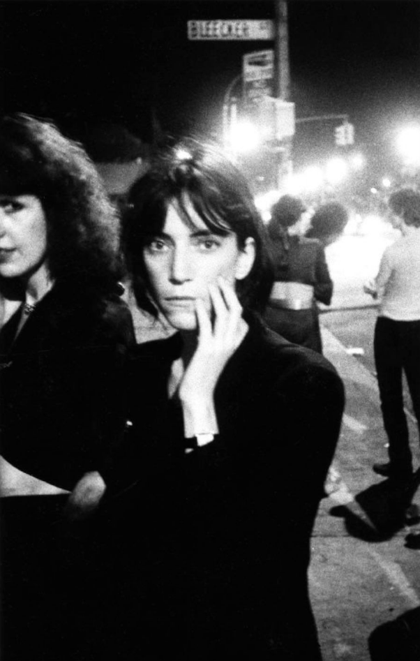
David Godlis Patti Smith Lit Up by Streetlights in Front of CBGB’s, the Bowery, New york City 1966
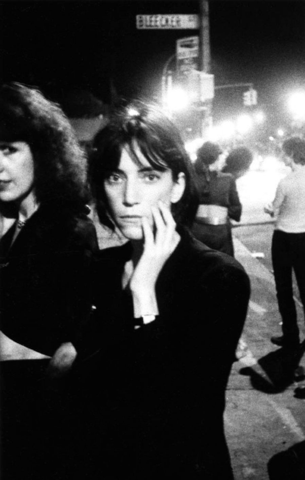
David Godlis Patti Smith Lit Up by Streetlights in Front of CBGB’s, the Bowery, New york City 1966
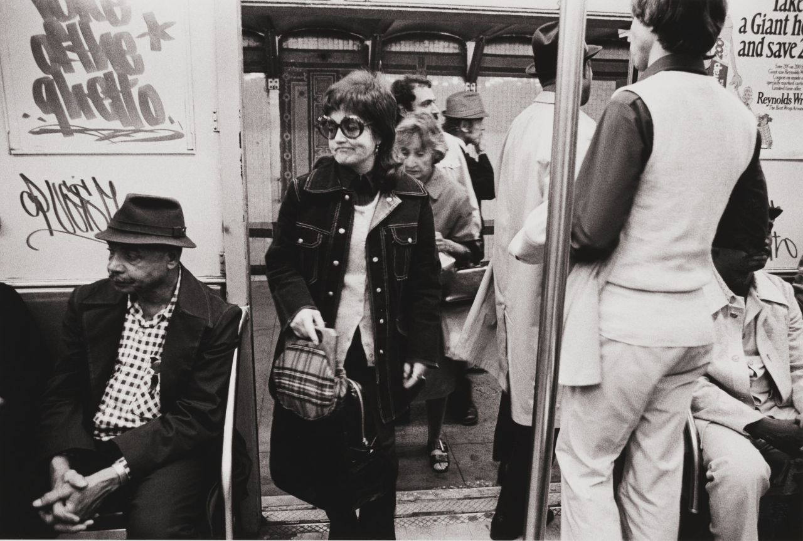
Leland Bobbé, Subway [Voice of the Ghetto], 1974.

77th and West End, 1970s
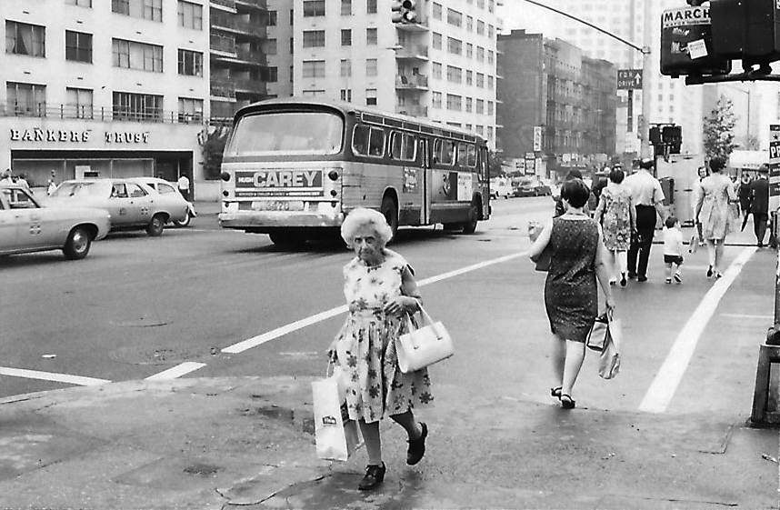
E. 86th Street, 1970s

Run DMC and the Beastie Boys in New York, 1987
Sweet Walkman headphones!

Subway, 1981
Allen Ginsberg, East 14th St., New York City, 1975. (Michael Tighe)

New York City [1975] //René Burri

Matt Dillon rides the subway, 1981
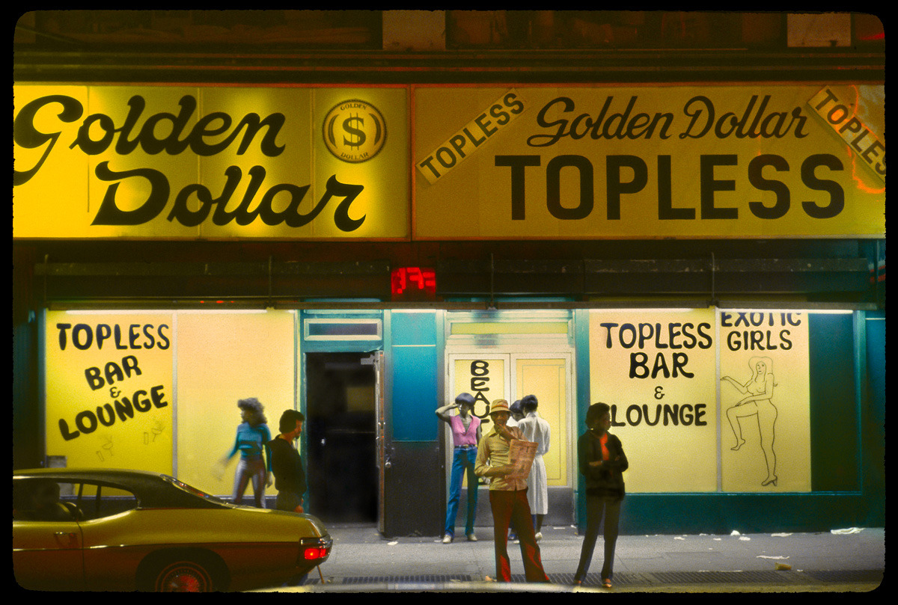
Golden Dollar Topless Bar, 592 7th Avenue
Photo by William Hellermann, ca. 1980

Philip Trager, West 122nd Street, 1979.
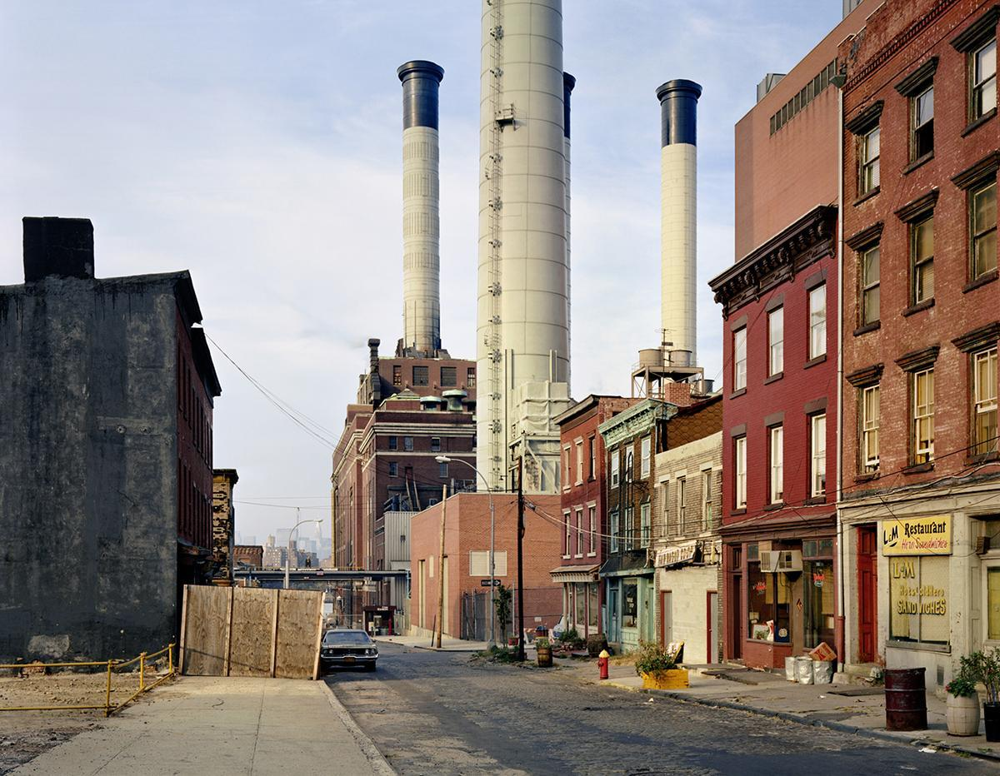
Joseph Bellows, Vinegar Hill, New York, 1985.

Music Factory, in Times Square, 1990s

Eleventh Avenue and 31st Street, NYC, 1987.
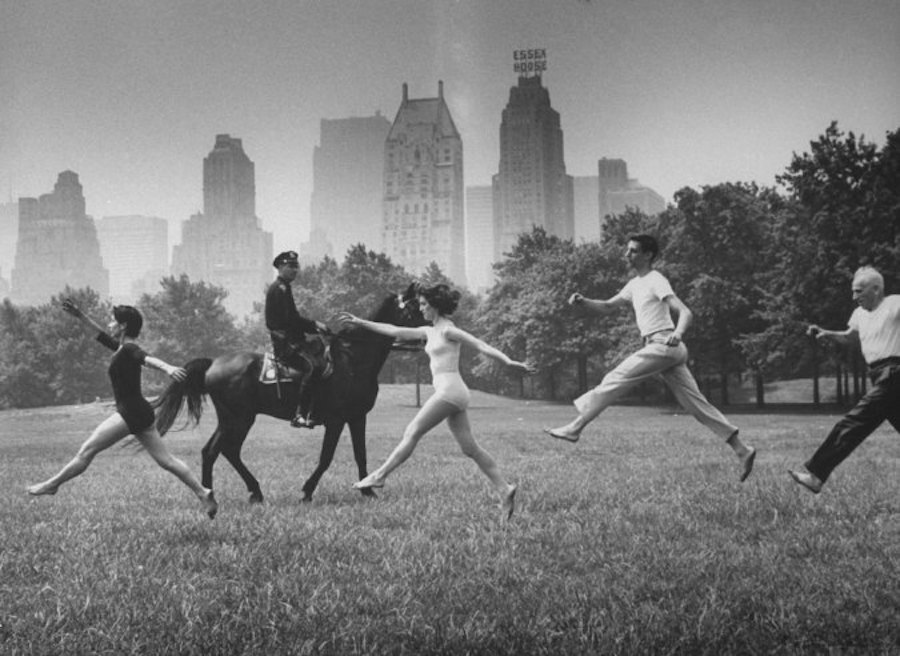
Dancers in Central Park, 1961

Chemical Bank, 1984

Construction, 1984

Snowy Times Square, 1984
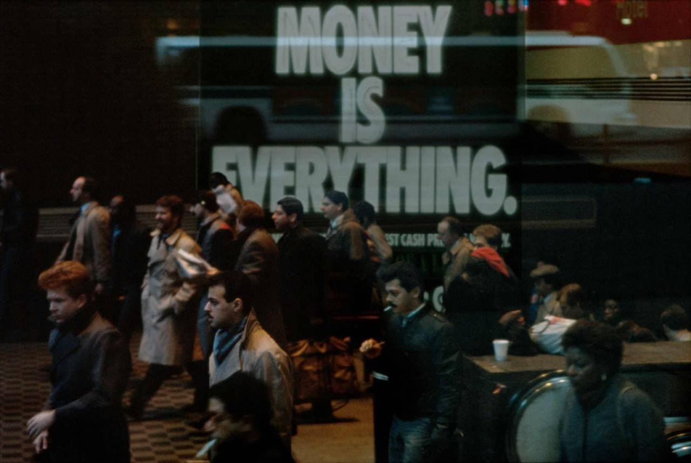
Money is everything
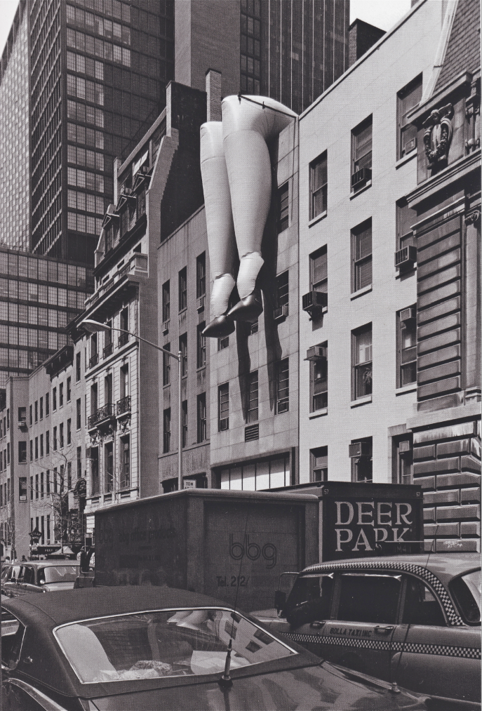
New-York by Elliott Erwitt 1978

Times Square, 1983

Times Square, 1976

Waiting for the bus, 1981

Chubby kid in Soho, 1981
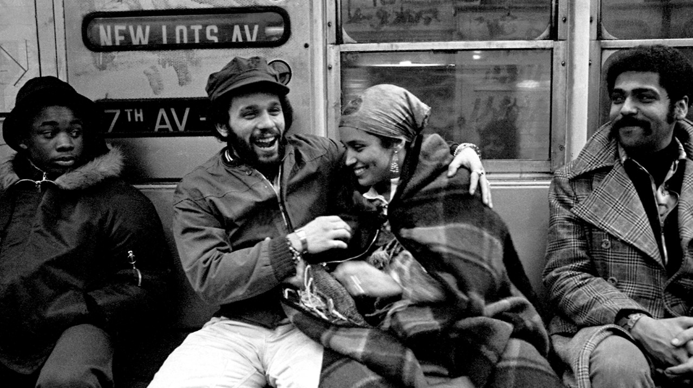
Subway, 1977
Subway, 1981
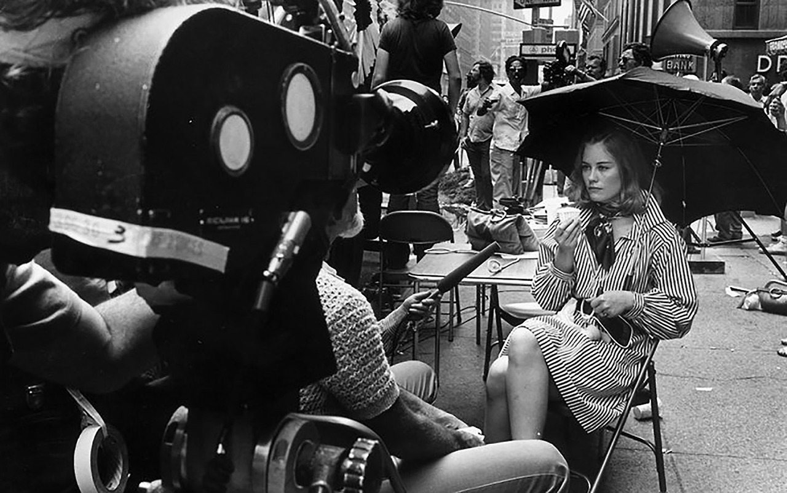
Filming “Taxi Driver”

Warriors, come out and plaaaaaay…
Dustin Hoffman in “Marathon Man”, running around the reservoir, 1976


Amsterdam and 95th, looking North, 1962
New York, 1965
André Kertèsz

1968

Riding in the 70s

Originally designed in 1964 by Radio City Music Hall architect Edward Durell Stone
My favorite building in NYC, which they have ruined now.
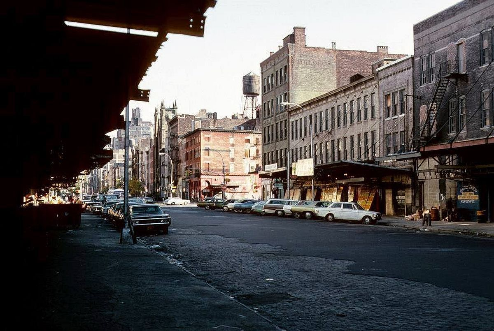
14th Street, between 9th and 10th, 1976

Madison and 64th, 1979

Lou’s Bar, near Church Street, lower Manhattan
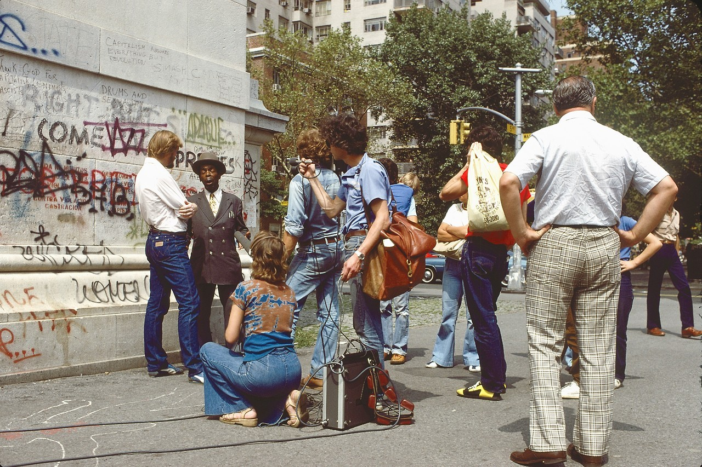
Pontificating in Washington Square Park, 1979

Bleecker and 7th Ave, 1979

Band playing on White Street, 1979. The audience is unimpressed.

Haste

Plenty of seats.
{kind=link}